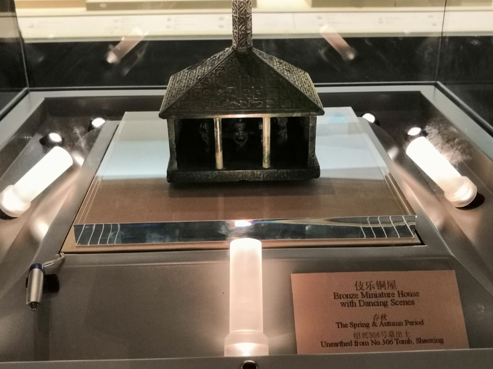

说实话我对历史的兴趣并没有像对黑科技那样感兴趣，但是今天参观的博物馆带给我的最直观的感受就是对古人的佩服，佩服他们的智慧。古琴、瓷器、铁器等物品，纺织、冶炼、雕刻等技术无不使我惊叹！同样的，博物馆带给我的另一个感受就是勿忘国耻，墙上烈士的名字，被日本帝国扫荡后荒凉的乡村、城镇，时时都在提醒着我们要铭记历史。
TEAM MEMBER:xxx xxx xxx

浙江省博物馆始建于1929年，原名“浙江省立西湖博物馆”，是浙江省内最大的集收藏、陈列、研究于一体的综合性人文科学博物馆，馆藏文物达十万余件。1993年，浙江省博物馆改扩建工程竣工，新馆占地20400 平方米，建筑面积7360平方米，新增历史文物馆、青瓷馆、书画馆、钱币馆、吕霞光艺术馆、常书鸿美术馆、明清家具馆等十个展馆。馆舍建筑以富有江南地域特色的单体建筑和连廊组合而成，形成了“园中馆，馆中园”的独特格局。
浙江省博物馆武林馆区位于杭州西湖文化广场E区，建筑面积20991平方米，陈列面积7600多平方米，2009年12月22日正式开放。目前设有“越地长歌——浙江历史文化陈列”、“钱江潮——浙江现代革命历史陈列”、“非凡的心声——世界非物质文化遗产中的中国古琴”、“意匠生辉——浙江民间造型艺术”、“十里红妆——宁绍婚俗中的红妆家具”等常设展览，地下一层为临时展厅，不定期举办国内外的临时展览。
October 21, 2018 | reviewer xxx
说实话我对历史的兴趣并没有像对黑科技那样感兴趣，但是今天参观的博物馆带给我的最直观的感受就是对古人的佩服，佩服他们的智慧。古琴、瓷器、铁器等物品，纺织、冶炼、雕刻等技术无不使我惊叹！同样的，博物馆带给我的另一个感受就是勿忘国耻，墙上烈士的名字，被日本帝国扫荡后荒凉的乡村、城镇，时时都在提醒着我们要铭记历史。
October 21, 2018 | reviewer xxx

参观完浙江省历史博物馆，我深深体会到了浙江历史的厚重和文化的博大。我仿佛刚刚跟着无数革命先辈们一起从硝烟弥漫、枪林弹雨的抗日战场上走来，见证了新中国的成立，懂得了没有无数革 命先辈的抛头颅洒热血，就没有我们现在的幸福生活。 “以史为鉴，面向未来；不忘初心，筑梦路上。”习近平总书记勉励我们要“从小学习做人，从小学习立志，从小学习创造。”我们青少年应该接过革命先辈的旗帜，珍惜这难得的学习机会，孜孜不倦，脚踏实地，百折不挠，开拓创新，把祖国建设得更加美好！
October 21, 2018 | reviewer xxx

在博物馆的一天，首先给我的第一感觉，是震撼！第一次如此近距离的接触文物古迹，那种感觉是前所未有的，在站在古物前的那刻，竟有种穿越的错觉。当我看到那些大炮枪械的时候，仿佛看到了当年红军奋力抗战的画面，当我看到八旗军的战袍时，仿佛看到了当年英姿飒爽的大批军队。 这次博物馆一游，收获颇多，以后会多去了解历史的。
 |
 |  |
 |
 |
 |
 |